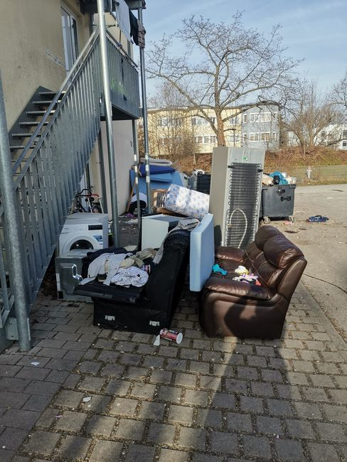
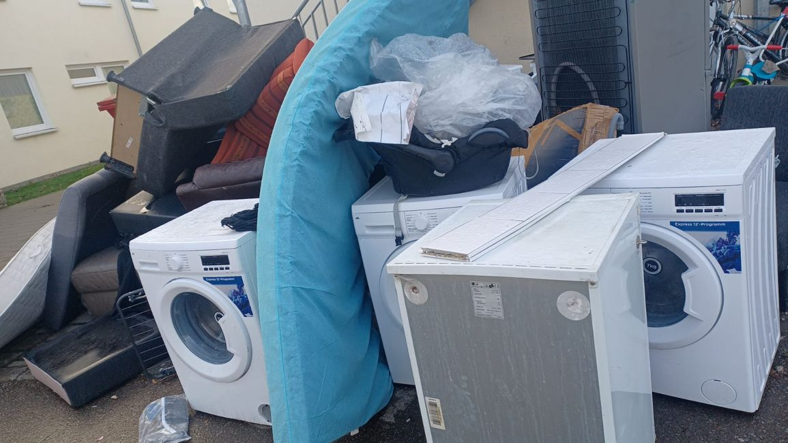

Das „virtuelle Warenhaus“: Sachen suchen und....finden
Du brauchst verschiedene Sachen....
Das ist sehr schön! Genau deswegen haben wir dieses „virtuelle Warenhaus“ eingerichtet.
Wichtiger Hinweis zu Lieferungen in Gemeinschaftsunterkünfte (Asylheime):
In den Unterkünften gibt es aktuell strenge Brandschutz-Vorgaben der Verwaltung. Deshalb mussten wir Lieferungen direkt in die Asylheime stark reduzieren und können dort momentan nur noch in echten Notfällen (z. B. fehlendes Bett für Kinder o. ä.) etwas bringen.
Für eigene Wohnungen gilt diese Einschränkung natürlich nicht!
Sprecht uns am besten direkt an oder schreibt uns eine E-Mail an Warenhaus-anfrage@freundeleuwi.org und schildert uns eure Situation!
Zuerst aber noch ein sehr wichtiger Hinweis:
Leider sieht es im Asylheim manchmal so aus:

Wir wissen nicht genau, wie diese Müllberge entstehen.
Möglicherweise hat es nachvollziehbare Gründe. Vielleicht bringen auch Leute von außerhalb ihren Müll hierher. Aber wenn die Müllberge einmal da sind, dann werden sie auf geheimnisvolle Weise immer größer.
Besonders nachts, wenn es niemand sieht.

NUR - ehrlich gesagt - motiviert uns das nicht besonders, wenn wir manchmal die Sachen, die wir mit einigem Aufwand zu Euch gebracht haben, dann hier auf dieser „privaten Müllhalde“ wiederfinden.
Aber das ist nicht alles. Es macht auch wirklich eine schlechte Stimmung in der Bevölkerung von Winnenden. Und das ist dann irgendwann für uns alle sehr negativ.
Auch der Hausmeister, der dann alles wegräumen muß, ärgert sich. Und das ist auch verständlich.
Und dann möchte er nicht mehr, dass wir Möbel zu Euch bringen.
Deswegen können wir Euch eigentlich nur dann Möbel und andere Sachen bringen, wenn ihr uns ehrlich versichert, dass ihr die alten Möbel nicht einfach rausstellt, wenn sie Euch nicht mehr gefallen.
Daher bitte die folgenden Punkte UNBEDINGT beachten:
-
Bitte IMMER zuerst bei
anderen Bewohnern nach einer Verwendung im
Asylheim fragen.
Oft benötigt auch jemand anderes die Sachen.
Aber NICHT einfach rausstellen und darauf hoffen, dass es dann jemand anderes nimmt.
Der Regen macht dann oft alles schnell kaputt und dann möchte es niemand mehr!
-
Ihr könnt auch uns fragen! Wir können die Möbel
eventuell auch für jemanden brauchen, der nicht im Asylheim wohnt.
Aber wir freuen uns sehr, wenn die Möbel zuerst im Asylheim selbst
gebraucht werden.
-
Manchmal kann man die Sachen auch reparieren.
In diesem Punkt haben wir auch schon eine gewisse Erfahrung.
Wir unterstützen euch dabei gerne!
-
Sprecht auch mit dem
Hausmeister, BEVOR ihr die Sachen rausstellt,
und holt Euch ZUERST sein „OK“.
-
Schickt uns eine E-Mail, wenn du Sachen nicht mehr brauchst:
Warenhaus-anfrage@freundeleuwi.org
Nur wenn wir hier alle wirklich zusammenhelfen, können wir weiter Möbel für Euch bringen.
Nur wenn wir alle zusammenhelfen, können wir es vielleicht schaffen, dass sich solche Bilder - wie oben - NICHT wiederholen.
Wenn du Möbel von uns anfragst, dann stimmst Du diesen Regeln zu!
So funktioniert unser virtuelles Warenhaus heute
Wir helfen sehr gerne – aber wir möchten nicht nur anonym Möbel von A nach B transportieren, sondern euch persönlich kennenlernen und Menschen in Kontakt bringen.
Deshalb ist die direkte Reservierung auf unserer Angebotsseite mit einem Zugangscode geschützt, den wir regelmäßig wechseln.
So bekommst du den aktuellen Zugangscode:
-
Komm gerne persönlich vorbei (am liebsten!):
Besuche uns bei unserem offenen Treff – dem Begegnungstreffen „Friday Welcome“. Dort lernen wir uns bei einer Tasse Kaffee oder Tee kennen und geben dir gerne den aktuellen Code. -
Du bist neu und schaffst es noch nicht zum Treffen?
Kein Problem! Schreib uns einfach eine kurze E-Mail an Warenhaus-anfrage@freundeleuwi.org, stell dich kurz vor und schreib uns, was du suchst. Wir melden uns dann bei dir.
In unserer Online-Übersicht siehst du alle aktuell verfügbaren Möbel und Gegenstände mit Fotos und Maßen und kannst deine Auswahl direkt anfragen:
Bitte habe Verständnis, wenn nicht alles ganz schnell und reibungslos klappt.
Wir alle arbeiten hier im Ehrenamt und oft sollte man an vielen Stellen gleichzeitig sein.
Aber wir versuchen – mit all unseren Schwächen und Unzulänglichkeiten – so gut es geht zu helfen.
Wer mitmachen möchte, ist herzlich willkommen.
Datenschutz: Wir gehen mit deinen Daten vertrauensvoll um. Deine Adresse wird nicht öffentlich im Internet sichtbar sein. Mit deiner Anfrage stimmst du automatisch der Speicherung deiner Daten zu. Wenn du uns später aufforderst, deine Daten wieder zu löschen, so werden wir das selbstverständlich tun. Wir geben deine Daten nur in dem Rahmen weiter, der für die Organisation der Warenvermittlung und wegen des Transportes notwendig ist.